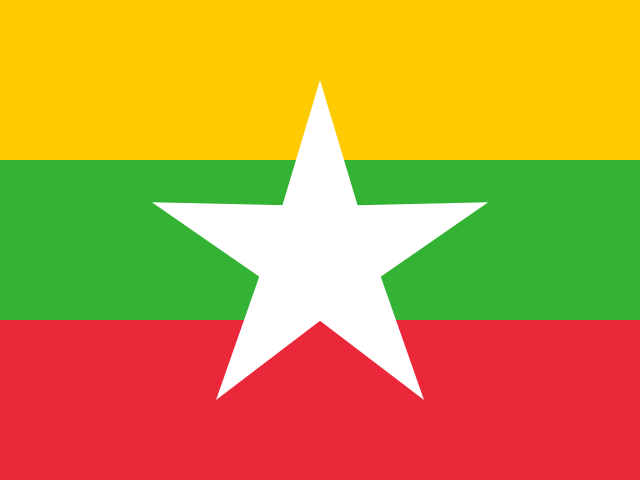

ミャンマー
Myanmar / アジア(東南アジア)
No.117
📍 位置
東南アジア北西部に位置し、インドや中国、タイなど5か国と国境を接する。
🏙 首都
ネピドー
👥 人口
約5,400万人
🏛 政治体制
共和制
💰 通貨
チャット(MMK)
🏗 建国年
1948年
📖 成り立ち
1948年1月4日、イギリスから独立してビルマ連邦が成立した。1989年に軍事政権により国名がミャンマーに改称された。
🗣 言語
- ビルマ語
🎎 民族
- ビルマ族
- シャン族
- カレン族
- その他少数民族
🍜 有名な食べ物
モヒンガー(魚の出汁の麺料理)、ラペットゥー(発酵茶葉のサラダ)
🏔 自然・地形
イラワジ川、シャン高原、インレー湖
💡 トリビア
「パゴダの国」と呼ばれるほど多くの仏塔があり、バガン遺跡には2,000以上の仏教寺院・仏塔が点在する。
📜 ことわざ・名言
「水牛が争えば、草がつぶれる」— 争いが弱い立場の者に被害を及ぼすことを説くビルマのことわざ。
🇯🇵 日本とのつながり
第二次世界大戦時の激戦地となった歴史があり、戦後は日本による戦没者慰霊や経済協力が続けられてきた。
🗺 観光名所
- バガン遺跡
- シュエダゴン・パゴダ
- インレー湖
🎬 関連動画
準備中です。